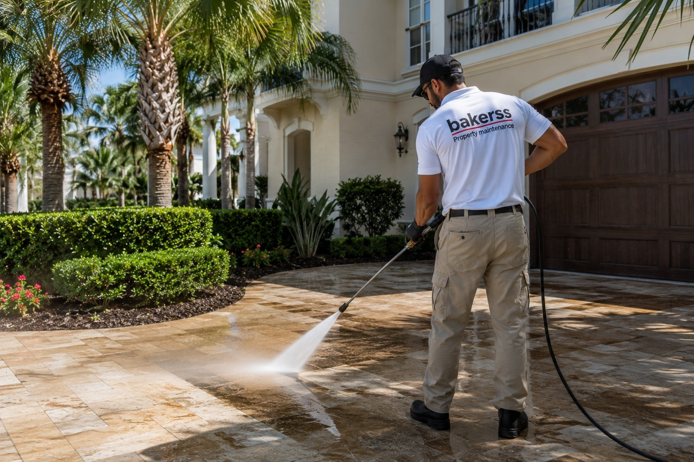

Pressure Washing in Myrtle Beach, Murrells Inlet & Horry County, SC
Professional pressure washing for driveways, patios, pool decks, siding, and walkways. Salt air and coastal humidity create mold, mildew, and algae that damage surfaces — we clean and protect your investment. Starting at $125.

Silo: Exterior Maintenance
Pressure Washing for Coastal Horry County Properties
Salt air, coastal humidity, and warm temperatures make Myrtle Beach one of the most demanding environments for exterior surfaces in the Southeast. Within months of installation, driveways, patios, pool decks, siding, and walkways begin accumulating mold, mildew, algae, and salt residue. Left untreated, these biological contaminants don't just look bad — they eat into concrete, stain siding, and accelerate surface deterioration.
Bakerss pressure washing services restore coastal surfaces to clean, safe, and attractive condition — and prevent the accelerated decay that comes from neglecting mold and algae in Horry County's humid environment. One call, one team, all exterior surfaces covered.
What Our Pressure Washing Service Includes
- ✓ Driveway and parking area pressure washing
- ✓ Patio, deck, and pool deck cleaning
- ✓ House siding pressure washing (vinyl, Hardie, wood)
- ✓ Sidewalk, path, and walkway cleaning
- ✓ Fence and gate washing
- ✓ Dumpster pad and commercial surface cleaning
- ✓ Soft washing option for delicate surfaces (stucco, older wood)
- ✓ Pre-sale and rental-ready exterior cleaning
Coastal Considerations in Horry County
- ✓ Mold and mildew — coastal humidity accelerates biological growth on all exterior surfaces; annual pressure washing is essential
- ✓ Algae — green and black algae stain concrete and siding quickly in Myrtle Beach's warm, humid conditions
- ✓ Salt residue — salt air deposits on driveways and siding contribute to surface deterioration without regular washing
- ✓ Guest impressions — vacation rental exterior condition is photographed and reviewed; dirty surfaces cost bookings
Combine Pressure Washing With These Exterior Services
Keep your property completely maintained with these complementary services — all from one vendor:
🌿 Lawn Care
A freshly mowed lawn paired with clean driveways and walkways is unbeatable curb appeal.
View Lawn Care →🏠 Gutter Cleaning
Combine pressure washing with gutter cleaning — total exterior maintenance in one visit.
View Gutter Cleaning →🌱 Landscaping
Full exterior maintenance: clean surfaces plus professionally maintained landscape beds.
View Landscaping →✂️ Bush Trimming
Complete your exterior refresh with pressure washing and hedge trimming in the same visit.
View Bush Trimming →Pressure Washing by Location
Pressure Washing Across Horry County — By City
Pressure Washing in Myrtle Beach, SC
Myrtle Beach's heavy tourist traffic, beachfront humidity, and salt air make pressure washing essential for maintaining vacation rental appearance and protecting home surfaces from accelerated coastal decay.
Myrtle Beach Services →Pressure Washing in Murrells Inlet, SC
Murrells Inlet waterfront properties accumulate algae and mold rapidly due to marsh humidity and shaded surfaces. Annual pressure washing is a maintenance standard for this community.
Murrells Inlet Services →Pressure Washing in Surfside Beach, SC
Surfside Beach homes benefit from annual pressure washing that removes the biological growth that Horry County's warm, humid climate deposits on all exterior surfaces.
Surfside Beach Services →Pressure Washing in Garden City, SC
Garden City's oceanfront environment produces rapid mold and salt residue accumulation on driveways and siding. We restore and protect these surfaces with professional pressure washing.
Garden City Services →Pressure Washing in Horry County, SC
We pressure wash properties throughout Horry County — from the beachfront communities to inland residential neighborhoods. One trusted team for all surface types and property sizes.
Horry County Services →Common Questions
Pressure Washing FAQ — Myrtle Beach & Horry County
Get Pressure Washing in Myrtle Beach Starting at $125
Serving Myrtle Beach, Murrells Inlet, Surfside Beach, Garden City, and all of Horry County. Salt air, mold, and mildew removed — coastal surfaces protected.